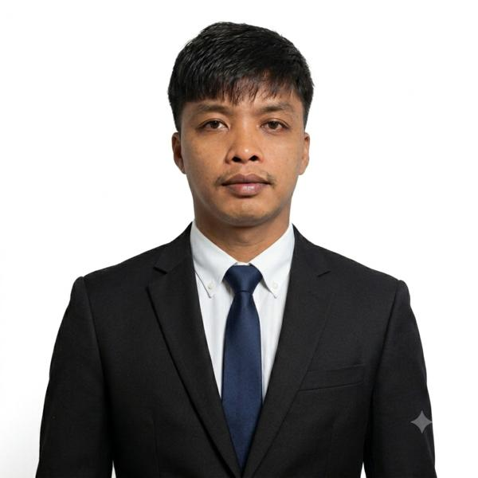

Customer Service | Technical Support | Licensed Professional Teacher
Highly motivated and enthusiastic professional with years of experience in customer service, technical support, retention, and digital resolutions. Passionate about helping customers, solving problems, and delivering excellent service.
Customer service and technical support for USA telephone/landline customers.
Streaming service technical support and customer assistance.
Handled digital resolutions, customer retention, technical troubleshooting, and earned recognition for outstanding performance.
Software technical support using CRM tools and remote access software.
Bachelor of Secondary Education – Major in English
San Mateo Municipal College
Licensed Professional Teacher (2017)
Email: stealemcold@gmail.com
Phone: +63 969 218 4524
Location: San Mateo, Rizal, Philippines